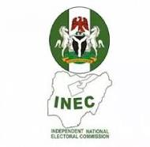
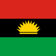
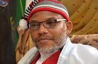

The coat of arms of Nigeria consists of a black shield with a wavy white pall symbolizing the meeting of Niger and Benue Rivers at Lokoja. The black shield represents Nigeria's fertile soil, while the two supporting horses or chargers on each side represent dignity.

Independent National Electoral Commission (INEC)
The Independent National Electoral Commision was established in 1998 and is the electoral body which oversees elections in Nigeria.

BIAFRA
Biafra, officially the Republic of Biafra, was a partially recognised secessionist state in west africa that declares independence from Nigeria and existed from 1967 until 1970. Its territory consisted of the predominantly igbo-populated Eastern Region of Nigeria.
Nnamdi Kanu

Nnamdi Okwu Kanu is a British-Nigerian political activist who advocates for the secession and independence of Biafra from Nigeria. He is the leader of Indegenous People of Biafra, which he founded in 2014
Peter Obi Visits Fayose.
The presidential candidate of the labour party, Peter Obi on sunday, visited the former governor of Ekiti State, Ayo Fayose at his Lagos home.
#BBnaija
Beauty gets disqualified after throwing her wig and glasses at Groovy after the saturday night party. She gets a double strike from biggie for her actions
NDLEA arrest pastor with drums of illicit drug.
Operations of the Nigerian Drug Law Enforcement Agency on sunday arrested one Akwa-Ibom pastor, Aniete Okon Effiong with three drums of crystal methamphetamin locally known as mkpurummiri.